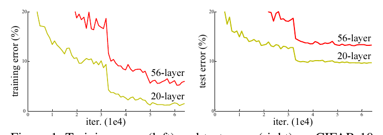
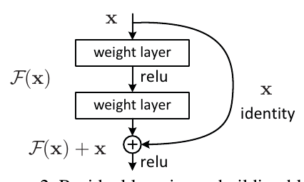
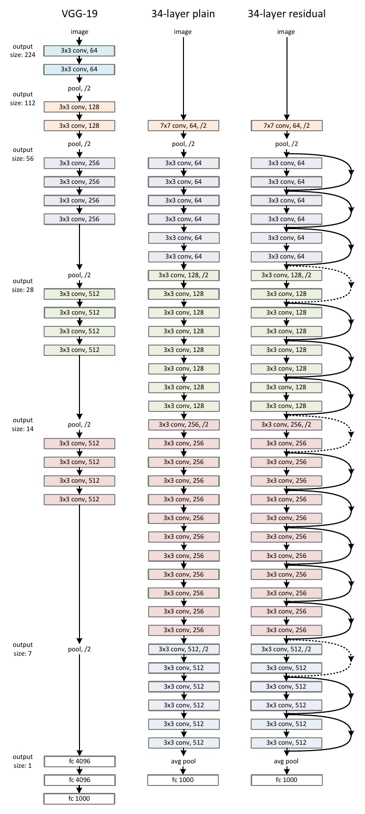
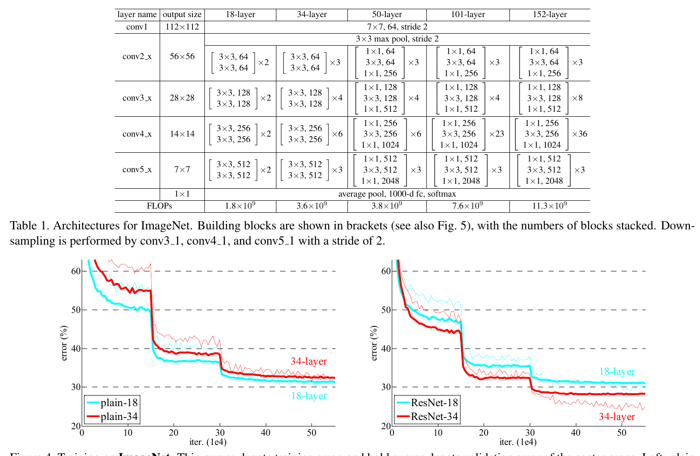
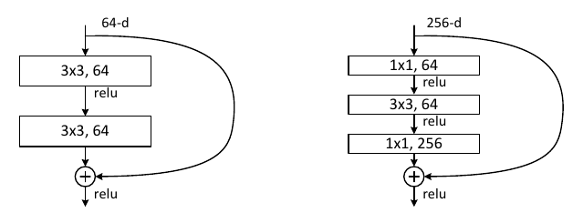
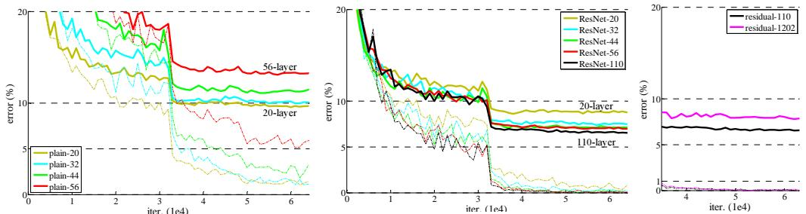
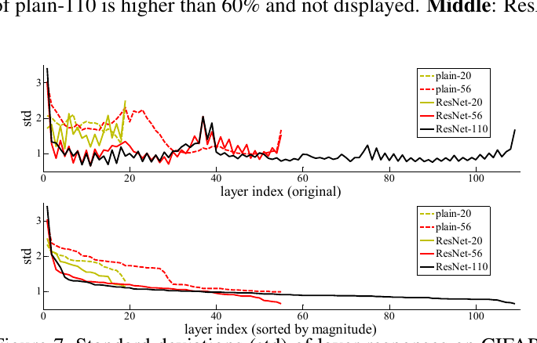

用于图像识别的深度残差学习Deep Residual Learning for Image Recognition
更深的神经网络更难训练。我们提出一个残差学习框架，用来缓解「比以前深得多的网络」的训练难题。我们把层显式地重新表述为：学习相对于层输入的残差函数，而不是学习没有参照的函数。我们提供了充分的经验证据，表明这些残差网络更容易优化，并且能从大幅增加的深度中获得准确率收益。在 ImageNet 数据集上，我们评估了深度高达 152 层的残差网络——比 VGG 网络深 8 倍，但复杂度仍更低。这些残差网络的集成在 ImageNet 测试集上取得 3.57% 的误差，夺得 ILSVRC 2015 分类任务第一名。我们还在 CIFAR-10 上给出了 100 层与 1000 层网络的分析。
表示的深度对许多视觉识别任务都至关重要。仅仅因为我们的表示极其深，就在 COCO 目标检测数据集上取得了 28% 的相对提升。深度残差网络是我们提交 ILSVRC & COCO 2015 竞赛的基础，我们还赢得了 ImageNet 检测、ImageNet 定位、COCO 检测与 COCO 分割这几项任务的第一名。
1 引言
深度卷积神经网络（LeCun 等, 1989; Krizhevsky 等, 2012）为图像分类带来了一系列突破（Krizhevsky 等, 2012; Zeiler & Fergus, 2014; Sermanet 等, 2014）。深度网络以端到端的多层方式自然地整合低/中/高层特征与分类器，而特征的「层级」可以通过堆叠层数（深度）来丰富。近期证据（Simonyan & Zisserman, 2015; Szegedy 等, 2015）表明网络深度至关重要：在 ImageNet 数据集（Russakovsky 等, 2014）上领先的结果（Simonyan & Zisserman, 2015; Szegedy 等, 2015; He 等, 2015b; Ioffe & Szegedy, 2015）都利用了「很深」的模型，深度从 16 层（Simonyan & Zisserman, 2015）到 30 层（Ioffe & Szegedy, 2015）。许多其他不平凡的视觉识别任务（Girshick 等, 2014; He 等, 2014; Girshick, 2015; Ren 等, 2015; Long 等, 2015）也从很深的模型中大受裨益。

受深度重要性的驱动，一个问题随之而来：学习更好的网络，是否就像堆叠更多层那么简单？回答这个问题的一个障碍，是臭名昭著的梯度消失/爆炸问题（Bengio 等, 1994; Glorot & Bengio, 2010），它从一开始就妨碍收敛。不过这个问题已在很大程度上被归一化初始化（LeCun 等, 1998; Glorot & Bengio, 2010; Saxe 等, 2013; He 等, 2015b）与中间归一化层（Ioffe & Szegedy, 2015）缓解，使数十层的网络能够用带反向传播的随机梯度下降（SGD）开始收敛。
当更深的网络能够开始收敛时，一个退化（degradation）问题暴露出来：随着网络深度增加，准确率先是饱和（这也许不奇怪），接着迅速下降。出乎意料的是，这种退化并不是过拟合造成的；给一个已经足够深的模型再加更多层，反而带来更高的训练误差，如（He & Sun, 2015; Srivastava 等, 2015）所报告、并被我们的实验充分验证。图 1 给出了一个典型例子。
（训练准确率的）退化说明：并非所有系统都一样容易优化。让我们考虑一个较浅的架构，以及一个在它之上加更多层的更深对应物。对更深的模型而言，存在一个构造性的解：新增的层是恒等映射，其余层从已学好的较浅模型复制而来。这个构造解的存在说明：更深的模型不应比它的较浅对应物产生更高的训练误差。但实验表明，我们手头现有的求解器无法找到与构造解相当（或更好）的解（或无法在可行时间内做到）。

本文通过引入深度残差学习框架来解决退化问题。我们不是指望每几个堆叠层直接拟合一个期望的底层映射，而是显式地让这些层去拟合一个残差映射。形式上，记期望的底层映射为 H(x)，我们让堆叠的非线性层去拟合另一个映射 F(x) := H(x) − x。原始映射由此改写为 F(x) + x。我们假设：优化残差映射比优化原本那个没有参照的映射更容易。极端情况下，如果恒等映射是最优的，那么把残差压到零，会比用一堆非线性层去拟合一个恒等映射更容易。
(x) + x 的形式可以用带「捷径连接」（shortcut connections）的前馈神经网络实现（图 2）。捷径连接（Bishop, 1995; Ripley, 1996; Venables & Ripley, 1999）是那些跳过一层或多层的连接。在我们的情形中，捷径连接只做恒等映射，其输出被加到堆叠层的输出上（图 2）。恒等捷径既不增加额外参数，也不增加计算复杂度。整个网络仍然可以用带反向传播的 SGD 端到端训练，并且可以用常见库（例如 Caffe（Jia 等, 2014））轻松实现，无需修改求解器。
我们在 ImageNet（Russakovsky 等, 2014）上给出充分的实验来展示退化问题并评估我们的方法。我们表明：1）我们极深的残差网络容易优化，而对应的「普通」网络（仅仅堆叠层）在深度增加时反而呈现更高的训练误差；2）我们的深度残差网络能轻松地从大幅增加的深度中获得准确率收益，结果显著优于以前的网络。
类似现象也出现在 CIFAR-10 数据集（Krizhevsky, 2009）上，说明这些优化困难以及我们方法的效应并不只是某个特定数据集的特点。我们在该数据集上成功训练了 100 层以上的模型，并探索了 1000 层以上的模型。
在 ImageNet 分类数据集（Russakovsky 等, 2014）上，我们用极深的残差网络取得了出色结果。我们的 152 层残差网络是 ImageNet 上迄今出现过的最深网络，而复杂度仍低于 VGG 网络（Simonyan & Zisserman, 2015）。我们的集成在 ImageNet 测试集上取得 3.57% 的 top-5 误差，赢得 ILSVRC 2015 分类竞赛第一名。这些极深的表示在其他识别任务上也有出色的泛化性能，并让我们进一步赢得以下任务的第一名：ImageNet 检测、ImageNet 定位、COCO 检测以及 COCO 分割。这些有力证据说明残差学习原则是通用的，我们预期它也能用于其他视觉与非视觉问题。
2 相关工作
残差表示。在图像识别中，VLAD（Jégou 等, 2012）是一种用「相对于字典的残差向量」来编码的表示，而 Fisher Vector（Perronnin & Dance, 2007）可以表述为 VLAD 的概率版本（Jégou 等, 2012）。二者都是用于图像检索与分类的强大浅层表示（Chatfield 等, 2011; Vedaldi & Fulkerson, 2008）。在向量量化中，编码残差向量（Jégou 等, 2011）被证明比编码原始向量更有效。
在低层视觉与计算机图形学中，为求解偏微分方程（PDE），广泛使用的多重网格法（Briggs 等, 2000）把系统重述为多个尺度上的子问题，每个子问题负责「较粗尺度与较细尺度之间的残差解」。多重网格的替代方案是层次基预条件（Szeliski, 1990; 2006），它依赖的变量表示两个尺度之间的残差向量。已有工作（Briggs 等, 2000; Szeliski, 1990; 2006）表明，这些求解器比「不了解解的残差本质」的标准求解器收敛快得多。这些方法说明：一个好的重述或预条件可以简化优化。
捷径连接。引出捷径连接（Bishop, 1995; Ripley, 1996; Venables & Ripley, 1999）的实践与理论已被研究了很久。训练多层感知机（MLP）的一个早期做法，是加一个从网络输入连到输出的线性层（Ripley, 1996; Venables & Ripley, 1999）。在（Szegedy 等, 2015; Lee 等, 2014）中，若干中间层直接连到辅助分类器上，以应对梯度消失/爆炸。（Schraudolph, 1998a; 1998b; Raiko 等, 2012; Vatanen 等, 2013）提出了对层的响应、梯度与传播误差做中心化的方法，通过捷径连接实现。在（Szegedy 等, 2015）中，一个「inception」层由一个捷径分支与若干更深的分支组成。
与我们的工作同时，「highway networks」（Srivastava 等, 2015; 2015b）提出了带门控函数（Hochreiter & Schmidhuber, 1997）的捷径连接。这些门是数据相关且带参数的，而我们的恒等捷径没有参数。当门控捷径「关闭」（趋近于零）时，highway networks 中的层表示的是非残差函数。相反，我们的表述始终学习残差函数；我们的恒等捷径从不关闭，所有信息始终被传递，只是额外学习残差函数。此外，highway networks 并未展示出在深度极大增加时（例如超过 100 层）的准确率增益。
3 深度残差学习
3.1 残差学习
让我们把 H(x) 看作由若干堆叠层（不一定是整个网络）要拟合的底层映射，x 表示这些层中第一层的输入。如果有人假设多个非线性层可以渐近地逼近复杂函数2，那么等价地，也就可以假设它们能渐近地逼近残差函数，即 H(x) − x（假定输入与输出维度相同）。所以，与其指望堆叠层去逼近 H(x)，我们显式地让这些层去逼近一个残差函数 F(x) := H(x) − x。原函数于是变成 F(x) + x。尽管两种形式（如所假设的）都应能渐近逼近目标函数，但学习的难易程度可能不同。
这一重述的动机来自退化问题中那些反直觉的现象（图 1 左）。如引言所讨论：如果新增的层可以被构造成恒等映射，更深的模型训练误差就不应大于较浅的对应物。退化问题说明，求解器可能难以用多个非线性层逼近恒等映射。有了残差学习的重述，如果恒等映射是最优的，求解器只需把多个非线性层的权重推向零，就能逼近恒等映射。
真实情形下，恒等映射不太可能是最优的，但我们的重述或许有助于对问题做预条件。如果最优函数更接近恒等映射而不是零映射，那么求解器应该更容易以「相对于恒等映射的扰动」来找到它，而不是把它当成一个新函数去学。我们通过实验（图 7）表明，学到的残差函数总体上响应很小，说明恒等映射提供了合理的预条件。
3.2 通过捷径做恒等映射
我们对每几个堆叠层都采用残差学习。一个基本模块如图 2 所示。形式上，本文考虑的基本模块定义为：
这里 x 与 y 是所考虑层的输入与输出向量。函数 F(x, {Wi}) 表示要学习的残差映射。对于图 2 中那个含两层的例子，F = W2σ(W1x)，其中 σ 表示 ReLU（Nair & Hinton, 2010），为简化记号省略了偏置。F + x 这一操作由一个捷径连接与逐元素相加来完成。我们在相加之后再加一个非线性（即 σ(y)，见图 2）。
式 (1) 中的捷径连接既不引入额外参数，也不引入计算复杂度。这在实践上有吸引力，对我们的普通网络与残差网络之间的比较也很重要。我们可以公平地比较普通/残差网络：它们同时具有相同的参数数量、深度、宽度与计算代价（除了可忽略的逐元素相加）。
式 (1) 中 x 与 F 的维度必须相同。如果不是（例如改变输入/输出通道数时），我们可以用捷径连接做一个线性投影 Ws 来匹配维度：
我们也可以在式 (1) 中使用方阵 Ws。但我们将通过实验表明：恒等映射已足以解决退化问题，而且更经济，因此 Ws 只在需要匹配维度时才使用。
残差函数 F 的形式是灵活的。本文实验涉及含两层或三层的 F（图 5），更多层也是可能的。但如果 F 只有一层，式 (1) 就近似一个线性层：y = W1x + x，我们没有观察到它的优势。
我们还要指出：尽管上述记号为了简单起见写的是全连接层，它们同样适用于卷积层。函数 F(x, {Wi}) 可以表示多个卷积层。逐元素相加在两个特征图上按通道逐一进行。
3.3 网络架构
我们测试了各种普通/残差网络，并观察到一致的现象。为便于讨论，下面描述两个用于 ImageNet 的模型。
普通网络。我们的普通基线（图 3 中）主要受 VGG 网络（Simonyan & Zisserman, 2015）（图 3 左）的理念启发。卷积层大多使用 3×3 滤波器，并遵循两条简单设计规则：(i) 对相同的输出特征图尺寸，各层拥有相同的滤波器数量；(ii) 如果特征图尺寸减半，滤波器数量就翻倍，以保持每层的时间复杂度不变。我们直接用步长为 2 的卷积层做下采样。网络以全局平均池化层和一个 1000 路带 softmax 的全连接层结束。图 3（中）中带权重的层总数为 34。
值得注意的是，我们的模型比 VGG 网络（Simonyan & Zisserman, 2015）（图 3 左）滤波器更少、复杂度更低。我们 34 层的基线有 36 亿 FLOPs（乘加），只有 VGG-19（196 亿 FLOPs）的 18%。

残差网络。在上述普通网络的基础上，我们插入捷径连接（图 3 右），把它变成对应的残差版本。当输入与输出维度相同时，恒等捷径（式 (1)）可以直接使用（图 3 中的实线捷径）。当维度增加时（图 3 中的虚线捷径），我们考虑两种选择：(A) 捷径仍然做恒等映射，对增加的维度用额外的零项填充。这一选项不引入额外参数；(B) 使用式 (2) 的投影捷径来匹配维度（由 1×1 卷积实现）。两种选择下，当捷径跨越两个尺寸的特征图时，都以步长 2 执行。
| 层名 | 输出尺寸 | 18 层 | 34 层 | 50 层 | 101 层 | 152 层 |
| conv1 | 112×112 | 7×7, 64，步长 2 | ||||
| conv2_x | 56×56 | 3×3 最大池化，步长 2 | ||||
| [3×3, 64; 3×3, 64] × 2 | [3×3, 64; 3×3, 64] × 3 | [1×1, 64; 3×3, 64; 1×1, 256] × 3 | [1×1, 64; 3×3, 64; 1×1, 256] × 3 | [1×1, 64; 3×3, 64; 1×1, 256] × 3 | ||
| conv3_x | 28×28 | [3×3, 128; 3×3, 128] × 2 | [3×3, 128; 3×3, 128] × 4 | [1×1, 128; 3×3, 128; 1×1, 512] × 4 | [1×1, 128; 3×3, 128; 1×1, 512] × 4 | [1×1, 128; 3×3, 128; 1×1, 512] × 8 |
| conv4_x | 14×14 | [3×3, 256; 3×3, 256] × 2 | [3×3, 256; 3×3, 256] × 6 | [1×1, 256; 3×3, 256; 1×1, 1024] × 6 | [1×1, 256; 3×3, 256; 1×1, 1024] × 23 | [1×1, 256; 3×3, 256; 1×1, 1024] × 36 |
| conv5_x | 7×7 | [3×3, 512; 3×3, 512] × 2 | [3×3, 512; 3×3, 512] × 3 | [1×1, 512; 3×3, 512; 1×1, 2048] × 3 | [1×1, 512; 3×3, 512; 1×1, 2048] × 3 | [1×1, 512; 3×3, 512; 1×1, 2048] × 3 |
| 1×1 | 平均池化，1000 维全连接层，softmax | |||||
| FLOPs | 1.8×109 | 3.6×109 | 3.8×109 | 7.6×109 | 11.3×109 | |
表 1 用于 ImageNet 的架构。基本模块以方括号给出（另见图 5），并标出堆叠的模块数量。下采样由 conv3_1、conv4_1、conv5_1 以步长 2 完成。
3.4 实现
我们在 ImageNet 上的实现遵循（Krizhevsky 等, 2012; Simonyan & Zisserman, 2015）的做法。图像按其短边在 [256, 480] 中随机采样来缩放，以做尺度增强（Simonyan & Zisserman, 2015）。从图像或其水平翻转中随机取 224×224 的裁剪，并减去逐像素均值（Krizhevsky 等, 2012）。使用（Krizhevsky 等, 2012）中的标准颜色增强。我们按（Ioffe & Szegedy, 2015）在每个卷积之后、激活之前插入批归一化（BN）。我们按（He 等, 2015b）初始化权重，并从头训练所有普通/残差网络。我们使用小批量大小为 256 的 SGD。学习率从 0.1 开始，每当误差进入平台期就除以 10，模型最多训练 60×104 次迭代。我们使用 0.0001 的权重衰减与 0.9 的动量。遵循（Ioffe & Szegedy, 2015）的做法，我们不使用 dropout（Hinton 等, 2012）。
测试时，为做比较研究我们采用标准的 10-crop 测试（Krizhevsky 等, 2012）。为取得最好结果，我们采用（Simonyan & Zisserman, 2015; He 等, 2015b）中的全卷积形式，并对多个尺度上的分数取平均（图像被缩放到短边为 224、256、384、480、640）。
4 实验
4.1 ImageNet 分类
我们在由 1000 类构成的 ImageNet 2012 分类数据集（Russakovsky 等, 2014）上评估我们的方法。模型在 128 万张训练图像上训练，在 5 万张验证图像上评估。我们还在 10 万张测试图像上取得最终结果，由测试服务器报告。我们评估 top-1 与 top-5 误差率。
普通网络。我们先评估 18 层与 34 层的普通网络。34 层普通网络见图 3（中），18 层普通网络形式类似。详细架构见表 1。
表 2 的结果显示，更深的 34 层普通网络验证误差高于更浅的 18 层普通网络。为揭示原因，图 4（左）比较了二者在训练过程中的训练/验证误差。我们观察到了退化问题——34 层普通网络在整个训练过程中训练误差都更高，尽管 18 层普通网络的解空间是 34 层的子空间。

| 普通网络 | ResNet | |
| 18 层 | 27.94 | 27.88 |
| 34 层 | 28.54 | 25.03 |
表 2 ImageNet 验证集上的 top-1 误差（%，10-crop 测试）。这里的 ResNet 与其普通对应物相比没有额外参数。图 4 展示了训练过程。
我们认为这种优化困难不太可能是梯度消失造成的。这些普通网络用 BN（Ioffe & Szegedy, 2015）训练，这保证了前向传播的信号具有非零方差。我们也验证了反向传播的梯度在 BN 下呈现健康的范数。所以前向与后向信号都没有消失。事实上，34 层普通网络仍能达到有竞争力的准确率（表 3），说明求解器在一定程度上是有效的。我们猜测，深层普通网络可能收敛速率呈指数级低，从而影响训练误差的下降3。这类优化困难的原因留待将来研究。
残差网络。接下来我们评估 18 层与 34 层残差网络（ResNet）。基线架构与上述普通网络相同，只是按图 3（右）为每对 3×3 滤波器加了一个捷径连接。在第一次比较（表 2 与图 4 右）中，我们对所有捷径使用恒等映射、对增加维度使用零填充（选项 A）。所以它们与其普通对应物相比没有额外参数。
从表 2 与图 4 我们有三点主要观察。第一，残差学习把这个局面反转了——34 层 ResNet 优于 18 层 ResNet（好 2.8%）。更重要的是，34 层 ResNet 呈现明显更低的训练误差，并且能泛化到验证数据。这说明在此设置下退化问题得到很好解决，我们成功地从未增加的深度中获得了准确率收益。
第二，与其普通对应物相比，34 层 ResNet 把 top-1 误差降低了 3.5%（表 2），这来自成功降低的训练误差（图 4 右 vs. 左）。这一比较验证了残差学习在极深系统中的有效性。
最后我们还注意到，18 层的普通/残差网络准确率相当（表 2），但 18 层 ResNet 收敛更快（图 4 右 vs. 左）。当网络「并非过分深」（这里是 18 层）时，当前的 SGD 求解器仍能为普通网络找到好解。这种情形下，ResNet 通过在早期阶段提供更快的收敛来缓解优化难度。
恒等捷径 vs. 投影捷径。我们已经表明，无参数的恒等捷径有助于训练。接下来我们考察投影捷径（式 (2)）。表 3 中我们比较三个选项：(A) 增加维度时用零填充捷径，所有捷径都无参数（与表 2、图 4 右相同）；(B) 增加维度时用投影捷径，其他捷径是恒等；(C) 所有捷径都是投影。

表 3 显示，三个选项都明显优于普通对应物。B 略优于 A。我们认为这是因为 A 中零填充的维度确实没有残差学习。C 比 B 略好，我们把这归因于许多（十三个）投影捷径引入的额外参数。但 A/B/C 之间的差异很小，说明投影捷径对解决退化问题并非必需。因此在本文余下部分我们不用选项 C，以减少内存/时间复杂度和模型大小。恒等捷径对于不增加下面引入的 bottleneck 架构的复杂度尤为重要。
| 模型 | top-1 误差 | top-5 误差 |
| VGG-16（Simonyan & Zisserman, 2015） | 28.07 | 9.33 |
| GoogLeNet（Szegedy 等, 2015） | — | 9.15 |
| PReLU-net（He 等, 2015b） | 24.27 | 7.38 |
| plain-34 | 28.54 | 10.02 |
| ResNet-34 A | 25.03 | 7.76 |
| ResNet-34 B | 24.52 | 7.46 |
| ResNet-34 C | 24.19 | 7.40 |
| ResNet-50 | 22.85 | 6.71 |
| ResNet-101 | 21.75 | 6.05 |
| ResNet-152 | 21.43 | 5.71 |
表 3 ImageNet 验证集上的误差率（%，10-crop 测试）。VGG-16 基于我们的测试。ResNet-50/101/152 采用选项 B，即只在增加维度时使用投影。
更深的 bottleneck 架构。接下来描述我们用于 ImageNet 的更深网络。出于对我们能负担的训练时间的考虑，我们把基本模块改成 bottleneck 设计4。对每个残差函数，我们用 3 层堆叠而不是 2 层（图 5）。这三层是 1×1、3×3、1×1 卷积，其中 1×1 层负责先降维再升维（恢复），使 3×3 层成为一个输入/输出维度更小的 bottleneck。图 5 给出一个例子，两种设计的时间复杂度相近。
无参数的恒等捷径对 bottleneck 架构尤为重要。如果把图 5（右）的恒等捷径换成投影，可以证明时间复杂度与模型大小都会翻倍，因为捷径连接到两个高维端。所以恒等捷径使 bottleneck 设计成为更高效的模型。
50 层 ResNet：我们把 34 层网络中的每个 2 层模块替换为这个 3 层 bottleneck 模块，得到 50 层 ResNet（表 1）。增加维度时使用选项 B。该模型有 38 亿 FLOPs。
101 层与 152 层 ResNet：我们通过使用更多 3 层模块来构造 101 层与 152 层 ResNet（表 1）。值得注意的是，尽管深度大幅增加，152 层 ResNet（113 亿 FLOPs）的复杂度仍低于 VGG-16/19（153/196 亿 FLOPs）。
50/101/152 层 ResNet 比 34 层的准确率高出可观幅度（表 3、表 4）。我们没有观察到退化问题，因此从大幅增加的深度中获得了显著的准确率收益。深度的好处在所有评价指标上都有体现（表 3、表 4）。
与当时最好方法的比较。表 4 中我们与之前最好的单模型结果比较。我们的 34 层 ResNet 基线已达到很有竞争力的准确率。我们的 152 层 ResNet 单模型 top-5 验证误差为 4.49%。这一单模型结果优于此前所有集成结果（表 5）。我们组合六个不同深度的模型构成集成（提交时只包含两个 152 层模型）。这在测试集上带来 3.57% 的 top-5 误差（表 5）。该提交赢得 ILSVRC 2015 第一名。
| 方法 | top-1 误差 | top-5 误差 |
| VGG（Simonyan & Zisserman, 2015）（ILSVRC'14） | — | 8.43† |
| GoogLeNet（Szegedy 等, 2015）（ILSVRC'14） | — | 7.89 |
| VGG（Simonyan & Zisserman, 2015）（v5） | 24.4 | 7.1 |
| PReLU-net（He 等, 2015b） | 21.59 | 5.71 |
| BN-inception（Ioffe & Szegedy, 2015） | 21.99 | 5.81 |
| ResNet-34 B | 21.84 | 5.71 |
| ResNet-34 C | 21.53 | 5.60 |
| ResNet-50 | 20.74 | 5.25 |
| ResNet-101 | 19.87 | 4.60 |
| ResNet-152 | 19.38 | 4.49 |
表 4 ImageNet 验证集上单模型结果的误差率（%）（标 † 的一项报告的是测试集）。
| 方法 | top-5 误差（测试集） |
| VGG（Simonyan & Zisserman, 2015）（ILSVRC'14） | 7.32 |
| GoogLeNet（Szegedy 等, 2015）（ILSVRC'14） | 6.66 |
| VGG（Simonyan & Zisserman, 2015）（v5） | 6.8 |
| PReLU-net（He 等, 2015b） | 4.94 |
| BN-inception（Ioffe & Szegedy, 2015） | 4.82 |
| ResNet（ILSVRC'15） | 3.57 |
表 5 集成的误差率（%）。top-5 误差为 ImageNet 测试集上的结果，由测试服务器报告。
4.2 CIFAR-10 与分析
我们在 CIFAR-10 数据集（Krizhevsky, 2009）上做了更多研究。它包含 10 个类别的 5 万张训练图像与 1 万张测试图像。我们给出在训练集上训练、在测试集上评估的实验。我们的关注点是极深网络的行为，而不是刷新最好结果，因此有意使用如下简单架构。
普通/残差架构遵循图 3（中/右）的形式。网络输入是 32×32 图像，减去逐像素均值。第一层是 3×3 卷积。然后我们使用 6n 层 3×3 卷积的堆叠，分别作用在尺寸为 32、16、8 的特征图上，每种特征图尺寸用 2n 层。滤波器数量分别是 16、32、64。下采样由步长为 2 的卷积完成。网络以全局平均池化、10 路全连接层与 softmax 结束。总共有 6n+2 个堆叠的带权重层。下表总结该架构：
| 输出特征图尺寸 | 32×32 | 16×16 | 8×8 |
| 层数 | 1 + 2n | 2n | 2n |
| 滤波器数量 | 16 | 32 | 64 |
使用捷径连接时，它们连接到成对的 3×3 层上（共 3n 个捷径）。在这个数据集上我们所有情形都使用恒等捷径（即选项 A），因此我们的残差模型与普通对应物具有完全相同的深度、宽度与参数数量。
| 方法 | 层数 | 参数量 | 误差 (%) |
| Maxout（Goodfellow 等, 2013） | — | — | 9.38 |
| NIN（Lin 等, 2013） | — | — | 8.81 |
| DSN（Lee 等, 2014） | — | — | 8.22 |
| FitNet（Romero 等, 2015） | 19 | 2.5M | 8.39 |
| Highway（Srivastava 等, 2015; 2015b） | 19 | 2.3M | 7.54（7.72±0.16） |
| Highway（Srivastava 等, 2015; 2015b） | 32 | 1.25M | 8.80 |
| ResNet | 20 | 0.27M | 8.75 |
| ResNet | 32 | 0.46M | 7.51 |
| ResNet | 44 | 0.66M | 7.17 |
| ResNet | 56 | 0.85M | 6.97 |
| ResNet | 110 | 1.7M | 6.43（6.61±0.16） |
| ResNet | 1202 | 19.4M | 7.93 |
表 6 CIFAR-10 测试集上的分类误差。所有方法都使用了数据增强。对 ResNet-110，我们运行 5 次并给出「最好（均值±标准差）」，与（Srivastava 等, 2015b）一致。
我们使用 0.0001 的权重衰减与 0.9 的动量，采用（He 等, 2015b）的权重初始化与 BN（Ioffe & Szegedy, 2015），但不使用 dropout。这些模型以 128 的小批量大小在两块 GPU 上训练。学习率从 0.1 开始，在 32k 与 48k 次迭代时除以 10，在 64k 次迭代时终止训练（该设置由 45k/5k 的训练/验证划分确定）。训练时我们采用（Lee 等, 2014）中简单的数据增强：每边填充 4 个像素，从填充后的图像或其水平翻转中随机取 32×32 裁剪。测试时我们只评估原始 32×32 图像的单视图。
我们比较 n = {3, 5, 7, 9}，得到 20、32、44、56 层的网络。图 6（左）展示了普通网络的行为。深层普通网络深受深度增加之害，越深训练误差越高。这一现象与 ImageNet（图 4 左）以及 MNIST（见（Srivastava 等, 2015））上类似，说明这类优化困难是一个根本性问题。
图 6（中）展示了 ResNet 的行为。同样与 ImageNet 情形（图 4 右）类似，我们的 ResNet 成功克服了优化困难，并在深度增加时表现出准确率收益。

我们进一步探索 n = 18，得到 110 层 ResNet。这一情形下我们发现初始学习率 0.1 略大、无法开始收敛5。于是我们用 0.01 先做热身训练，直到训练误差低于 80%（约 400 次迭代），再回到 0.1 继续训练。其余学习率安排与之前相同。这个 110 层网络收敛良好（图 6 中）。它的参数比其他深而瘦的网络（例如 FitNet（Romero 等, 2015）与 Highway（Srivastava 等, 2015））更少（表 6），却处在最好结果之列（6.43%，表 6）。

层响应分析。图 7 展示了各层响应的标准差（std）。响应是每个 3×3 层的输出，取在 BN 之后、其他非线性（ReLU/相加）之前。对 ResNet 而言，这一分析揭示了残差函数的响应强度。图 7 显示 ResNet 的响应总体上小于其普通对应物。这些结果支持我们的基本动机（3.1 节）：残差函数可能总体上比非残差函数更接近零。我们还注意到，更深的 ResNet 响应幅度更小，这从图 7 中 ResNet-20、56 与 110 的比较可以看出。层数更多时，ResNet 的单个层倾向于更少地改动信号。
探索 1000 层以上。我们探索了一个超过 1000 层的极端深模型。我们设 n = 200，得到 1202 层网络，按上述方式训练。我们的方法没有表现出优化困难，这个 103 层网络能够达到训练误差 <0.1%（图 6 右）。它的测试误差仍然相当好（7.93%，表 6）。
但对这类极端深的模型仍有未解问题。这个 1202 层网络的测试结果比我们的 110 层网络更差，尽管两者的训练误差相近。我们认为这是过拟合造成的。对这个不大的数据集而言，1202 层网络可能大得没有必要（19.4M 参数）。在该数据集上取得最好结果的做法（Goodfellow 等, 2013; Lin 等, 2013; Lee 等, 2014; Romero 等, 2015）都使用了 maxout（Goodfellow 等, 2013）或 dropout（Hinton 等, 2012）这样的强正则化。本文不使用 maxout/dropout，只是通过设计「深而瘦」的架构来施加正则化，以免偏离对优化困难的关注。但结合更强的正则化可能会改善结果，这留待将来研究。
4.3 PASCAL 与 MS COCO 上的目标检测
我们的方法在其他识别任务上有良好的泛化性能。表 7 与表 8 展示了 PASCAL VOC 2007/2012（Everingham 等, 2010）与 COCO（Lin 等, 2014）上的目标检测基线结果。我们采用 Faster R-CNN（Ren 等, 2015）作为检测方法。这里我们关心的是「用 ResNet-101 替换 VGG-16（Simonyan & Zisserman, 2015）」带来的改进。两个模型所用检测实现（见附录）完全相同，因此增益只能归因于更好的网络。最值得注意的是，在颇具挑战的 COCO 数据集上，我们在 COCO 的标准指标（mAP@[.5, .95]）上获得 6.0% 的提升，即 28% 的相对改进。这一增益完全来自学到的表示。
| 训练数据 | 07+12 | 07++12 |
| 测试数据 | VOC 07 测试集 | VOC 12 测试集 |
| VGG-16 | 73.2 | 70.4 |
| ResNet-101 | 76.4 | 73.8 |
表 7 使用基线 Faster R-CNN 在 PASCAL VOC 2007/2012 测试集上的目标检测 mAP（%）。更好的结果另见表 10 与表 11。
| 指标 | mAP@.5 | mAP@[.5, .95] |
| VGG-16 | 41.5 | 21.2 |
| ResNet-101 | 48.4 | 27.2 |
表 8 使用基线 Faster R-CNN 在 COCO 验证集上的目标检测 mAP（%）。更好的结果另见表 9。
基于深度残差网络，我们在 ILSVRC & COCO 2015 竞赛的几个赛道中赢得第一名：ImageNet 检测、ImageNet 定位、COCO 检测与 COCO 分割。细节见附录。
参考文献
按约定，参考文献条目保留英文原文，不作翻译（便于与原文及检索工具对照）。
- Y. Bengio, P. Simard, and P. Frasconi. Learning long-term dependencies with gradient descent is difficult. IEEE Transactions on Neural Networks, 5(2):157–166, 1994.
- C. M. Bishop. Neural networks for pattern recognition. Oxford university press, 1995.
- W. L. Briggs, S. F. McCormick, et al. A Multigrid Tutorial. Siam, 2000.
- K. Chatfield, V. Lempitsky, A. Vedaldi, and A. Zisserman. The devil is in the details: an evaluation of recent feature encoding methods. In BMVC, 2011.
- M. Everingham, L. Van Gool, C. K. Williams, J. Winn, and A. Zisserman. The Pascal Visual Object Classes (VOC) Challenge. IJCV, pages 303–338, 2010.
- S. Gidaris and N. Komodakis. Object detection via a multi-region & semantic segmentation-aware cnn model. In ICCV, 2015.
- R. Girshick. Fast R-CNN. In ICCV, 2015.
- R. Girshick, J. Donahue, T. Darrell, and J. Malik. Rich feature hierarchies for accurate object detection and semantic segmentation. In CVPR, 2014.
- X. Glorot and Y. Bengio. Understanding the difficulty of training deep feedforward neural networks. In AISTATS, 2010.
- I. J. Goodfellow, D. Warde-Farley, M. Mirza, A. Courville, and Y. Bengio. Maxout networks. arXiv:1302.4389, 2013.
- K. He and J. Sun. Convolutional neural networks at constrained time cost. In CVPR, 2015.
- K. He, X. Zhang, S. Ren, and J. Sun. Spatial pyramid pooling in deep convolutional networks for visual recognition. In ECCV, 2014.
- K. He, X. Zhang, S. Ren, and J. Sun. Delving deep into rectifiers: Surpassing human-level performance on imagenet classification. In ICCV, 2015b.
- G. E. Hinton, N. Srivastava, A. Krizhevsky, I. Sutskever, and R. R. Salakhutdinov. Improving neural networks by preventing coadaptation of feature detectors. arXiv:1207.0580, 2012.
- S. Hochreiter and J. Schmidhuber. Long short-term memory. Neural computation, 9(8):1735–1780, 1997.
- S. Ioffe and C. Szegedy. Batch normalization: Accelerating deep network training by reducing internal covariate shift. In ICML, 2015.
- H. Jegou, M. Douze, and C. Schmid. Product quantization for nearest neighbor search. TPAMI, 33, 2011.
- H. Jegou, F. Perronnin, M. Douze, J. Sanchez, P. Perez, and C. Schmid. Aggregating local image descriptors into compact codes. TPAMI, 2012.
- Y. Jia, E. Shelhamer, J. Donahue, S. Karayev, J. Long, R. Girshick, S. Guadarrama, and T. Darrell. Caffe: Convolutional architecture for fast feature embedding. arXiv:1408.5093, 2014.
- A. Krizhevsky. Learning multiple layers of features from tiny images. Tech Report, 2009.
- A. Krizhevsky, I. Sutskever, and G. Hinton. Imagenet classification with deep convolutional neural networks. In NIPS, 2012.
- Y. LeCun, B. Boser, J. S. Denker, D. Henderson, R. E. Howard, W. Hubbard, and L. D. Jackel. Backpropagation applied to handwritten zip code recognition. Neural computation, 1989.
- Y. LeCun, L. Bottou, G. B. Orr, and K.-R. Muller. Efficient backprop. In Neural Networks: Tricks of the Trade, pages 9–50. Springer, 1998.
- C.-Y. Lee, S. Xie, P. Gallagher, Z. Zhang, and Z. Tu. Deeply supervised nets. arXiv:1409.5185, 2014.
- M. Lin, Q. Chen, and S. Yan. Network in network. arXiv:1312.4400, 2013.
- T.-Y. Lin, M. Maire, S. Belongie, J. Hays, P. Perona, D. Ramanan, P. Dollar, and C. L. Zitnick. Microsoft COCO: Common objects in context. In ECCV, 2014.
- J. Long, E. Shelhamer, and T. Darrell. Fully convolutional networks for semantic segmentation. In CVPR, 2015.
- G. Montufar, R. Pascanu, K. Cho, and Y. Bengio. On the number of linear regions of deep neural networks. In NIPS, 2014.
- V. Nair and G. E. Hinton. Rectified linear units improve restricted boltzmann machines. In ICML, 2010.
- F. Perronnin and C. Dance. Fisher kernels on visual vocabularies for image categorization. In CVPR, 2007.
- T. Raiko, H. Valpola, and Y. LeCun. Deep learning made easier by linear transformations in perceptrons. In AISTATS, 2012.
- S. Ren, K. He, R. Girshick, and J. Sun. Faster R-CNN: Towards real-time object detection with region proposal networks. In NIPS, 2015.
- S. Ren, K. He, R. Girshick, X. Zhang, and J. Sun. Object detection networks on convolutional feature maps. arXiv:1504.06066, 2015b.
- B. D. Ripley. Pattern recognition and neural networks. Cambridge university press, 1996.
- A. Romero, N. Ballas, S. E. Kahou, A. Chassang, C. Gatta, and Y. Bengio. Fitnets: Hints for thin deep nets. In ICLR, 2015.
- O. Russakovsky, J. Deng, H. Su, J. Krause, S. Satheesh, S. Ma, Z. Huang, A. Karpathy, A. Khosla, M. Bernstein, et al. Imagenet large scale visual recognition challenge. arXiv:1409.0575, 2014.
- A. M. Saxe, J. L. McClelland, and S. Ganguli. Exact solutions to the nonlinear dynamics of learning in deep linear neural networks. arXiv:1312.6120, 2013.
- N. N. Schraudolph. Accelerated gradient descent by factor-centering decomposition. Technical report, 1998a.
- N. N. Schraudolph. Centering neural network gradient factors. In Neural Networks: Tricks of the Trade, pages 207–226. Springer, 1998b.
- P. Sermanet, D. Eigen, X. Zhang, M. Mathieu, R. Fergus, and Y. LeCun. Overfeat: Integrated recognition, localization and detection using convolutional networks. In ICLR, 2014.
- K. Simonyan and A. Zisserman. Very deep convolutional networks for large-scale image recognition. In ICLR, 2015.
- R. K. Srivastava, K. Greff, and J. Schmidhuber. Highway networks. arXiv:1505.00387, 2015.
- R. K. Srivastava, K. Greff, and J. Schmidhuber. Training very deep networks. arXiv:1507.06228, 2015b.
- C. Szegedy, W. Liu, Y. Jia, P. Sermanet, S. Reed, D. Anguelov, D. Erhan, V. Vanhoucke, and A. Rabinovich. Going deeper with convolutions. In CVPR, 2015.
- R. Szeliski. Fast surface interpolation using hierarchical basis functions. TPAMI, 1990.
- R. Szeliski. Locally adapted hierarchical basis preconditioning. In SIGGRAPH, 2006.
- T. Vatanen, T. Raiko, H. Valpola, and Y. LeCun. Pushing stochastic gradient towards second-order methods–backpropagation learning with transformations in nonlinearities. In Neural Information Processing, 2013.
- A. Vedaldi and B. Fulkerson. VLFeat: An open and portable library of computer vision algorithms, 2008.
- W. Venables and B. Ripley. Modern applied statistics with s-plus. 1999.
- M. D. Zeiler and R. Fergus. Visualizing and understanding convolutional neural networks. In ECCV, 2014.
附录 A 目标检测基线
本节介绍我们基于基线 Faster R-CNN（Ren 等, 2015）系统的检测方法。模型由 ImageNet 分类模型初始化，再在目标检测数据上微调。在 ILSVRC & COCO 2015 检测竞赛时，我们实验了 ResNet-50/101。
与（Ren 等, 2015）所用的 VGG-16 不同，我们的 ResNet 没有隐藏的全连接层。我们采用「在卷积特征图上的网络」（Networks on Conv feature maps, NoC）（Ren 等, 2015b）这一思路来解决该问题。我们用「在图像上的步长不超过 16 像素」的那些层（即 conv1、conv2_x、conv3_x、conv4_x，在 ResNet-101 中共 91 个卷积层；表 1）来计算全图共享的卷积特征图。我们把这些层类比于 VGG-16 中的 13 个卷积层：这样一来，ResNet 与 VGG-16 的卷积特征图具有相同的总步长（16 像素）。这些层由区域建议网络（RPN，生成 300 个建议）（Ren 等, 2015）与 Fast R-CNN 检测网络（Girshick, 2015）共享。RoI 池化（Girshick, 2015）在 conv5_1 之前执行。在这个 RoI 池化后的特征上，对每个区域采用 conv5_x 及更高层所有层，扮演 VGG-16 中全连接层的角色。最后的分类层被替换为两个同级的层（分类与框回归（Girshick, 2015））。
关于 BN 层的使用：预训练之后，我们在 ImageNet 训练集上为每一层计算 BN 统计量（均值与方差）。随后在目标检测的微调过程中固定 BN 层。这样 BN 层就变成带常数偏移与尺度的线性激活，BN 统计量不会被微调更新。我们固定 BN 层主要是为了减少 Faster R-CNN 训练中的内存消耗。
PASCAL VOC
遵循（Girshick, 2015; Ren 等, 2015），对 PASCAL VOC 2007 测试集，我们用 VOC 2007 的 5k trainval 图像与 VOC 2012 的 16k trainval 图像训练（「07+12」）。对 PASCAL VOC 2012 测试集，我们用 VOC 2007 的 10k trainval+test 图像与 VOC 2012 的 16k trainval 图像训练（「07++12」）。训练 Faster R-CNN 的超参数与（Ren 等, 2015）相同。表 7 给出结果：ResNet-101 相对 VGG-16 把 mAP 提高了 3% 以上。这一增益完全来自 ResNet 学到的更好的特征。
MS COCO
MS COCO 数据集（Lin 等, 2014）涉及 80 个物体类别。我们评估 PASCAL VOC 指标（mAP @ IoU = 0.5）与 COCO 标准指标（mAP @ IoU = .5:.05:.95）。我们用训练集的 80k 图像训练、验证集的 40k 图像评估。我们的 COCO 检测系统与 PASCAL VOC 的类似。我们用 8 卡 GPU 实现训练 COCO 模型，因此 RPN 步骤的小批量大小为 8 张图像（即每卡 1 张），Fast R-CNN 步骤的小批量大小为 16 张图像。RPN 步骤与 Fast R-CNN 步骤都以学习率 0.001 训练 240k 次迭代，然后再以 0.0001 训练 80k 次迭代。
表 8 给出 MS COCO 验证集上的结果。ResNet-101 相对 VGG-16 在 mAP@[.5, .95] 上提升 6%，即 28% 的相对改进，完全归功于更好的网络学到的特征。值得注意的是，mAP@[.5, .95] 的绝对提升（6.0%）几乎和 mAP@.5 的提升（6.9%）一样大。这说明更深的网络能同时改善识别与定位。
附录 B 目标检测的改进
为完整起见，我们报告为竞赛所做的改进。这些改进基于深度特征，因此也应从残差学习中受益。
MS COCO
框精修（Box refinement）。我们的框精修部分遵循（Gidaris & Komodakis, 2015）中的迭代定位。在 Faster R-CNN 中，最终输出是一个回归框，它与提议框不同。因此推理时，我们从回归框上重新池化一个新特征，得到一个新的分类得分与一个新的回归框。我们把这 300 个新预测与原来的 300 个预测合并。对预测框的并集使用 IoU 阈值 0.3 做非极大值抑制（NMS）（Girshick 等, 2014），随后做框投票（box voting）（Gidaris & Komodakis, 2015）。框精修把 mAP 提升约 2 个点（表 9）。
全局上下文。我们在 Fast R-CNN 步骤中加入全局上下文。给定全图卷积特征图，我们用全局空间金字塔池化（He 等, 2014）（「单层」金字塔）池化出一个特征，这可以实现为「以整幅图像的边界框作为 RoI」的 RoI 池化。这个池化特征被送入 RoI 之后的各层，得到全局上下文特征。该全局特征与原本的逐区域特征拼接，随后进入同级的分类与框回归层。这个新结构是端到端训练的。全局上下文把 mAP@.5 提升约 1 个点（表 9）。
多尺度测试。以上所有结果都按（Ren 等, 2015）做单尺度训练/测试得到，其中图像短边 s = 600 像素。多尺度训练/测试在（He 等, 2014; Girshick, 2015）中通过从特征金字塔中选择尺度来实现，在（Ren 等, 2015b）中则通过 maxout 层实现。在我们当前的实现中，我们按（Ren 等, 2015b）做了多尺度测试；由于时间有限，没有做多尺度训练。此外，我们只对 Fast R-CNN 步骤做了多尺度测试（尚未对 RPN 步骤做）。对训练好的模型，我们在图像金字塔上计算卷积特征图，图像短边为 s ∈ {200, 400, 600, 800, 1000}。
我们按（Ren 等, 2015b）从金字塔中选择两个相邻尺度。RoI 池化与后续层在这两个尺度的特征图上执行（Ren 等, 2015b），并按（Ren 等, 2015b）用 maxout 合并。多尺度测试把 mAP 提升 2 个点以上（表 9）。
使用验证数据。接下来我们用 80k+40k 的 trainval 集训练、用 20k 的 test-dev 集评估。test-dev 集没有公开的真值，结果由评估服务器报告。在该设置下，结果为 mAP@.5 = 55.7%、mAP@[.5, .95] = 34.9%（表 9）。这是我们的单模型结果。
集成。在 Faster R-CNN 中，系统被设计为同时学习区域建议与物体分类器，因此集成可以用来同时提升这两个任务。我们用一个集成来生成区域建议，提议的并集由一组逐区域分类器处理。表 9 给出基于 3 个网络集成的结果：在 test-dev 集上 mAP 为 59.0% 与 37.4%。该结果赢得 COCO 2015 检测任务第一名。
| 训练数据 | COCO train | COCO trainval | ||
| 测试数据 | COCO val | COCO test-dev | ||
| mAP | @.5 | @[.5, .95] | @.5 | @[.5, .95] |
| 基线 Faster R-CNN（VGG-16） | 41.5 | 21.2 | ||
| 基线 Faster R-CNN（ResNet-101） | 48.4 | 27.2 | ||
| + 框精修 | 49.9 | 29.9 | ||
| + 上下文 | 51.1 | 30.0 | 53.3 | 32.2 |
| + 多尺度测试 | 53.8 | 32.5 | 55.7 | 34.9 |
| 集成 | 59.0 | 37.4 | ||
表 9 使用 Faster R-CNN 与 ResNet-101 在 MS COCO 上的目标检测改进。
PASCAL VOC
我们基于上述模型再次考察 PASCAL VOC 数据集。用在 COCO 数据集上的单模型（表 9 中 55.7% mAP@.5），我们在 PASCAL VOC 各集合上微调该模型。框精修、上下文与多尺度测试的改进也被采用。这样我们在 PASCAL VOC 2007 上取得 85.6% mAP（表 10）、在 PASCAL VOC 2012 上取得 83.8% mAP（表 11）6。PASCAL VOC 2012 上的结果比此前的最好结果（Gidaris & Komodakis, 2015）高 10 个点。
| 系统 | 网络 | 数据 | mAP | aero | bike | bird | boat | bottle | bus | car | cat | chair | cow | table | dog | horse | mbike | person | plant | sheep | sofa | train | tv |
| baseline | VGG-16 | 07+12 | 73.2 | 76.5 | 79.0 | 70.9 | 65.5 | 52.1 | 83.1 | 84.7 | 86.4 | 52.0 | 81.9 | 65.7 | 84.8 | 84.6 | 77.5 | 76.7 | 38.8 | 73.6 | 73.9 | 83.0 | 72.6 |
| baseline | ResNet-101 | 07+12 | 76.4 | 79.8 | 80.7 | 76.2 | 68.3 | 55.9 | 85.1 | 85.3 | 89.8 | 56.7 | 87.8 | 69.4 | 88.3 | 88.9 | 80.9 | 78.4 | 41.7 | 78.6 | 79.8 | 85.3 | 72.0 |
| baseline++ | ResNet-101 | COCO+07+12 | 85.6 | 90.0 | 89.6 | 87.8 | 80.8 | 76.1 | 89.9 | 89.9 | 89.6 | 75.5 | 90.0 | 80.7 | 89.6 | 90.3 | 89.1 | 88.7 | 65.4 | 88.1 | 85.6 | 89.0 | 86.8 |
表 10 PASCAL VOC 2007 测试集上的检测结果。基线为 Faster R-CNN 系统。表中「baseline++」包含表 9 中的框精修、上下文与多尺度测试。
| 系统 | 网络 | 数据 | mAP | aero | bike | bird | boat | bottle | bus | car | cat | chair | cow | table | dog | horse | mbike | person | plant | sheep | sofa | train | tv |
| baseline | VGG-16 | 07++12 | 70.4 | 84.9 | 79.8 | 74.3 | 53.9 | 49.8 | 77.5 | 75.9 | 88.5 | 45.6 | 77.1 | 55.3 | 86.9 | 81.7 | 80.9 | 79.6 | 40.1 | 72.6 | 60.9 | 81.2 | 61.5 |
| baseline | ResNet-101 | 07++12 | 73.8 | 86.5 | 81.6 | 77.2 | 58.0 | 51.0 | 78.6 | 76.6 | 93.2 | 48.6 | 80.4 | 59.0 | 92.1 | 85.3 | 84.8 | 80.7 | 48.1 | 77.3 | 66.5 | 84.7 | 65.6 |
| baseline+++ | ResNet-101 | COCO+07++12 | 83.8 | 92.1 | 88.4 | 84.8 | 75.9 | 71.4 | 86.3 | 87.8 | 94.2 | 66.8 | 89.4 | 69.2 | 93.9 | 91.9 | 90.9 | 89.6 | 67.9 | 88.2 | 76.8 | 90.3 | 80.0 |
表 11 PASCAL VOC 2012 测试集上的检测结果（来自官方排行榜）。基线为 Faster R-CNN 系统。表中「baseline+++」包含表 9 中的框精修、上下文与多尺度测试。
ImageNet 检测
ImageNet 检测（DET）任务涉及 200 个物体类别，准确率用 mAP@.5 评估。我们用于 ImageNet DET 的物体检测算法与表 9 中用于 MS COCO 的相同。网络在 1000 类 ImageNet 分类集上预训练，再在 DET 数据上微调。我们按（Girshick 等, 2014）把验证集分成两部分（val1/val2）。我们用 DET 训练集与 val1 集微调检测模型，val2 集用于验证。我们没有使用其他 ILSVRC 2015 数据。我们使用 ResNet-101 的单模型在 DET 测试集上取得 58.8% mAP，3 个模型的集成取得 62.1% mAP（表 12）。该结果赢得 ILSVRC 2015 ImageNet 检测任务第一名，比第二名高出 8.5 个点（绝对值）。
| val2 | test | |
| GoogLeNet（Szegedy 等, 2015）（ILSVRC'14） | — | 43.9 |
| 我们的单模型（ILSVRC'15） | 60.5 | 58.8 |
| 我们的集成（ILSVRC'15） | 63.6 | 62.1 |
表 12 我们在 ImageNet 检测数据集上的结果（mAP，%）。检测系统为带表 9 改进的 Faster R-CNN（Ren 等, 2015），使用 ResNet-101。
附录 C ImageNet 定位
ImageNet 定位（LOC）任务（Russakovsky 等, 2014）要求对物体做分类与定位。遵循（Sermanet 等, 2014; Simonyan & Zisserman, 2015），我们假定先用图像级分类器预测图像的类别标签，定位算法只负责基于预测类别预测边界框。我们采用「逐类回归」（per-class regression, PCR）策略（Sermanet 等, 2014; Simonyan & Zisserman, 2015），为每个类别学习一个边界框回归器。我们先为 ImageNet 分类预训练网络，再为定位微调。我们在所提供的 1000 类 ImageNet 训练集上训练网络。
我们的定位算法基于（Ren 等, 2015）的 RPN 框架并做若干修改。与（Ren 等, 2015）中与类别无关的做法不同，我们用于定位的 RPN 设计成逐类的形式。这个 RPN 以两个同级的 1×1 卷积层结束，分别做二分类（cls）与框回归（reg），如（Ren 等, 2015）。与（Ren 等, 2015）相反，cls 与 reg 层都是逐类形式。具体而言：cls 层输出 1000 维，每一维是对「是否为某个物体类」的二项逻辑回归预测；reg 层输出 1000×4 维，由 1000 个类别的框回归器组成。与（Ren 等, 2015）一样，我们的边界框回归以每个位置上的多个平移不变的「anchor」框为参照。
与我们的 ImageNet 分类训练（3.4 节）一样，我们随机采样 224×224 裁剪做数据增强。微调时使用 256 张图像的小批量。为避免负样本占主导，每张图像随机采样 8 个 anchor，其中采到的正负 anchor 比例为 1:1（Ren 等, 2015）。测试时，网络以全卷积方式施加到图像上。
表 13 比较了定位结果。遵循（Simonyan & Zisserman, 2015），我们先做「oracle」测试，即用真实类别作为分类预测。VGG 的论文（Simonyan & Zisserman, 2015）报告在真实类别下中心裁剪误差为 33.1%（表 13）。在相同设置下，我们使用 ResNet-101 的 RPN 方法把中心裁剪误差显著降到 13.3%。这一比较展示了我们框架的出色性能。使用稠密（全卷积）与多尺度测试时，我们的 ResNet-101 在真实类别下误差为 11.7%。用 ResNet-101 做类别预测（top-5 分类误差 4.6%，表 4），top-5 定位误差为 14.4%。
| LOC 方法 | LOC 网络 | 测试 | 真实类别上的 LOC 误差 | 分类网络 | 预测类别上的 top-5 LOC 误差 |
| VGG（Simonyan & Zisserman, 2015） | VGG-16 | 1-crop | 33.1 | ||
| RPN | ResNet-101 | 1-crop | 13.3 | ||
| RPN | ResNet-101 | dense | 11.7 | ||
| RPN | ResNet-101 | dense | ResNet-101 | 14.4 | |
| RPN+RCNN | ResNet-101 | dense | ResNet-101 | 10.6 | |
| RPN+RCNN | 集成 | dense | 集成 | 8.9 |
表 13 ImageNet 验证集上的定位误差（%）。在「真实类别上的 LOC 误差」一列（（Simonyan & Zisserman, 2015）的做法）使用真实类别。在「测试」列中，「1-crop」表示在 224×224 的中心裁剪上测试，「dense」表示稠密（全卷积）与多尺度测试。
上述结果只基于 Faster R-CNN（Ren 等, 2015）中的建议网络（RPN）。人们可以用 Faster R-CNN 中的检测网络（Fast R-CNN（Girshick, 2015））来改善结果。但我们注意到，在该数据集上一张图像通常只含一个主导物体，提议区域之间高度重叠，因此其 RoI 池化特征非常相似。结果是，Fast R-CNN（Girshick, 2015）以图像为中心的训练会产生变化很小的样本，这对随机训练而言可能并不理想。受此启发，我们当前实验使用以 RoI 为中心的原始 R-CNN（Girshick 等, 2014）来替代 Fast R-CNN。
我们的 R-CNN 实现如下。我们把上面训练好的逐类 RPN 施加到训练图像上，为真实类别预测边界框。这些预测框充当与类别相关的提议。对每张训练图像，取出得分最高的 200 个提议作为训练样本来训练一个 R-CNN 分类器。图像区域从提议中裁剪出来，变形到 224×224 像素，按 R-CNN（Girshick 等, 2014）送入分类网络。该网络的输出由两个同级的全连接层构成，分别做 cls 与 reg，同样是逐类形式。这个 R-CNN 网络以 RoI 为中心的方式、用 256 的小批量大小在训练集上微调。测试时，RPN 为每个预测类别生成得分最高的 200 个提议，再用 R-CNN 网络更新这些提议的得分与框位置。
该方法把 top-5 定位误差降到 10.6%（表 13）。这是我们在验证集上的单模型结果。使用分类与定位都做集成的网络，我们在测试集上取得 9.0% 的 top-5 定位误差。该数字显著优于 ILSVRC 14 的结果（表 14），即误差相对减少 64%。该结果赢得 ILSVRC 2015 ImageNet 定位任务第一名。
| 方法 | top-5 定位误差 | |
| 验证集 | 测试集 | |
| OverFeat（Sermanet 等, 2014）（ILSVRC'13） | 30.0 | 29.9 |
| GoogLeNet（Szegedy 等, 2015）（ILSVRC'14） | — | 26.7 |
| VGG（Simonyan & Zisserman, 2015）（ILSVRC'14） | 26.9 | 25.3 |
| 我们（ILSVRC'15） | 8.9 | 9.0 |
表 14 与当时最好方法在 ImageNet 定位误差（%）上的比较。
图表索引
- 图 1 CIFAR-10 上 20 层与 56 层普通网络的训练误差（左）与测试误差（右）
- 图 2 残差学习：一个基本模块
- 图 3 ImageNet 的示例架构：VGG-19（左）、34 层普通网络（中）、34 层残差网络（右）
- 图 4 在 ImageNet 上训练：普通网络（左）与 ResNet（右）
- 图 5 更深残差函数：基本模块（左）与 bottleneck 模块（右）
- 图 6 CIFAR-10 上的训练曲线：普通网络（左）、ResNet（中）、110 与 1202 层 ResNet（右）
- 图 7 CIFAR-10 上各层响应的标准差（上：按原始顺序；下：按降序）
表 1 在各小节中直接排出：表 1 架构、表 2 普通/残差网络对比、表 3 单模型误差、表 4 单模型最好结果、表 5 集成结果、表 6 CIFAR-10、表 7 与表 8 检测基线；附录中还有表 9–14。
本页由 Zotero 库中的 PDF 原文与 MinerU 解析结果翻译整理而成。图片为从源 PDF 中裁取的原始插图，存于同目录下 images/。参考文献保留原文，未作翻译。